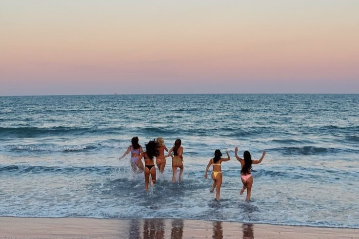
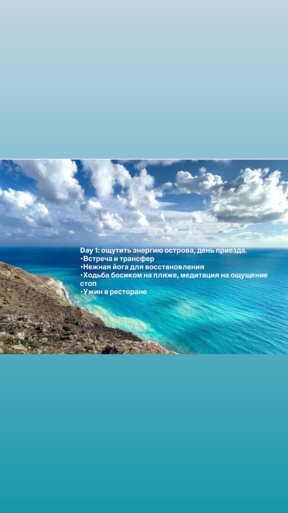
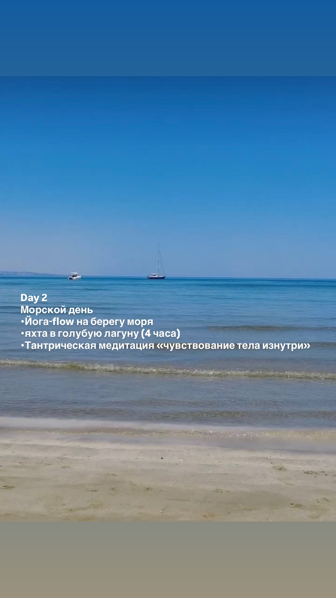
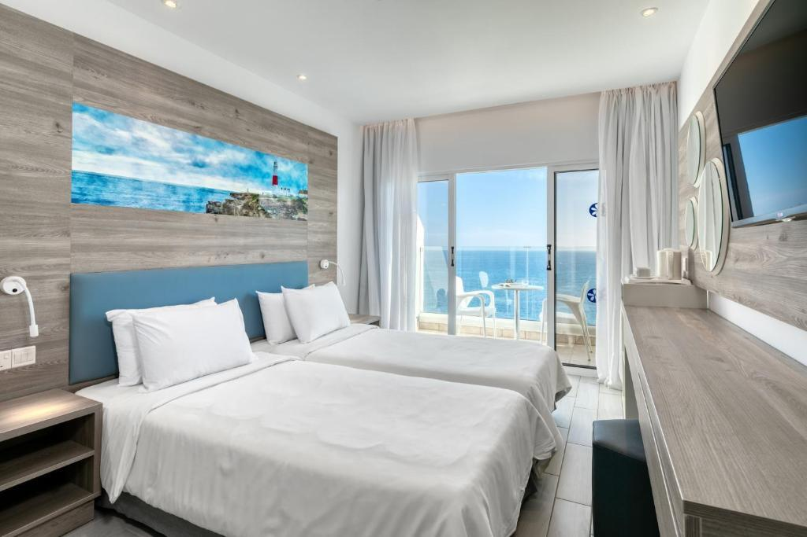

23–25 April 2027 · Ayia Napa, Cyprus
Three days of silence,
breath and sea


I have lived on the island for more than four years and know its hidden places: beaches, mountains and points of strength.
I take care of the practical details so you can simply enjoy the journey. We will visit beautiful taverns and the best routes across Cyprus. Mountain walks and breathing practices in pine forests help restore the breathing and nervous system through sea and pine air.
3 daysyoga and pranayama
5 practicesmorning and evening
Mediterraneanyoga and island journeys
Daily practice
Yoga, meditation and pranayama, shaped around the group's needs.
Morning
Practice from 7:00 to 8:30.
Evening
Practice from 19:00 to 20:00.
Special island journeys
- Journey to the Troodos Mountains to see waterfalls and breathe crystal-clear mountain air.
- Visit Aphrodite's birthplace, a symbol of love and beauty.
- Take gentle hikes to panoramic viewpoints that take your breath away.
- Explore Cyprus by boat and along the coastline.
- Walk the Venetian Bridges trail.
Practices
Morning yoga, meditation and pranayama. Evening sessions respond to the group's needs.
Journeys
The Troodos Mountains, Aphrodite's birthplace, boat journeys and quiet island trails.
Support
We organise the essentials so you can rest and stay present in movement and stillness.



Detailed programme
Booking conditions
Journey cost: €540
I assist with Cyprus visa applications by sending a completed form and document example.
Included
- Breakfast
- Single or double hotel room
- Airport and island transfers
- Boat trip
- Yoga sessions
Not included
- Flights
- Lunches and dinners
A large villa can also be arranged, with lower prices in winter.
Atlantica Sungarden Beach hotel ↗


Contact me
If other dates suit you better, write to me — different formats and options are available.
Contact ↗